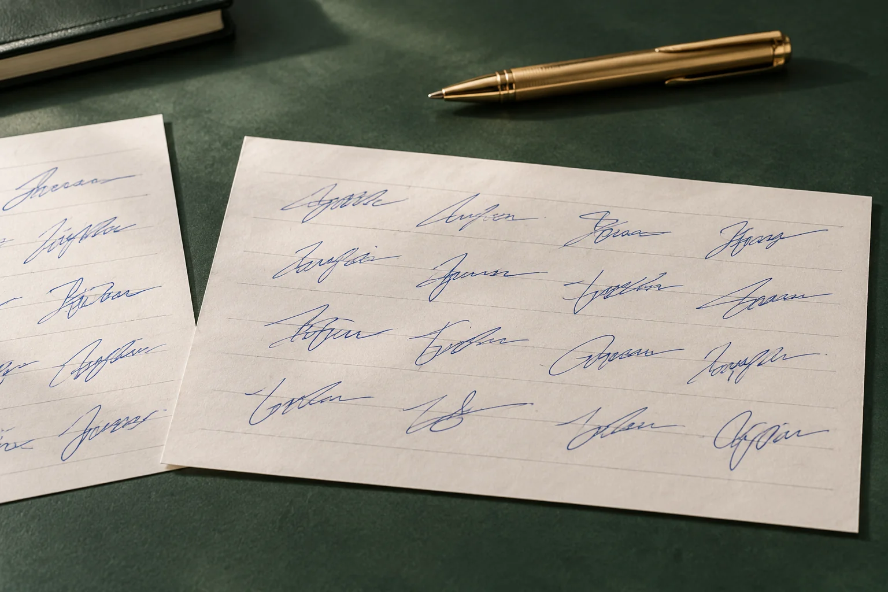

广州模仿签名样本里的尾笔伸出纸边，还能看完整吗
图片裁得过紧，姓名末笔可能已经超出画面。看似短促的收尾，有时只是截图没有保留全部内容。

先分清纸边和画面边界
广州模仿签名参考里，图像边缘不一定就是纸张边缘。若末笔一直延伸到画面外，就不能把截图中的终点当成实际收笔。应先寻找对应整页或更宽范围的原图，确认哪些部分被截去；没有原图时，明确标注尾部不完整，不用想象补画。
别用留白比例反推长度
姓名周围的空白可能在裁切时改变，屏幕显示宽度也会变化。模仿签字参考需要看所在栏位时，应保留左右边界及相关印刷内容。不同截图不能只靠拉成相同尺寸来比较长短，否则人为缩放会把原来需要观察的比例差异一并消除。
完整样本按次保存
几次自然落款的尾笔可能长短不同，应分别保留整次签写。不要从另一张图片找一段末笔接上去，即使看着顺畅，也改变了材料内容。模仿笔迹长文参考同样如此，局部可以单独放大，但原图必须能解释它究竟来自哪一页。
清单写明缺失范围
笔迹鉴定资料若只剩局部图，应说明缺失左右边界、日期或所在页面等信息。材料缺口越具体，补充时越容易找对文件。增加多个相同裁切图的副本并不能补足缺失部分，也不应被算作新的自然样本。